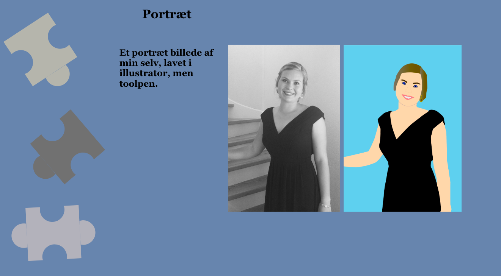
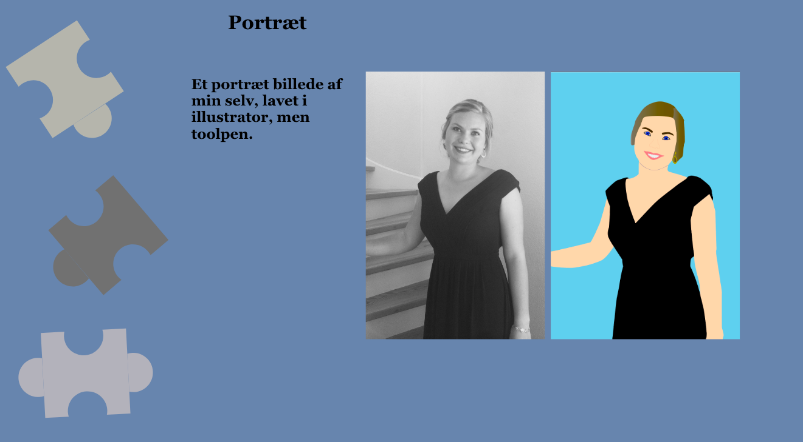

Om Mig
Hvem er Maja?
Jeg er 21 år gammel, født og opvokset på Langeland. Her bor jeg stadig, og elsker det! Bor i byen sammen med min kæreste Jonas. Jeg har hele familen i en omkreds af små 5 minutter. Forældre, lillebror, bedsteforældre, svigerfamilen, fætre, kusiner, moster, onkel, tante, morbror, ja dem alle. Det er dejligt, og noget jeg nyder i min hverdag.Den kreative side
Hver eneste dag løber tankerne afsted med nye og gamle kreative projekter. Det kripler i fingerne for at komme igang. Det giver mig ro at kunne udfolde mig kreativt. Efter mange overvejelser fuldte jeg mit hjerte og valgte en kreativ uddanelse, som multimediedesigner på EAL. Det er det bedtse valg, jeg har truffet.

 
